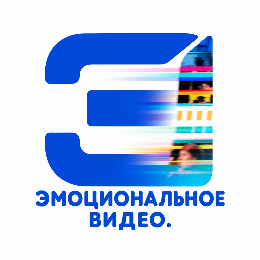

Демонстрирую работу с TTS, трекингом губ и ручной доводкой.
Сборка музыкального ролика из нейросетевых элементов. Показываю, как из разрозненных AI‑компонентов сделать цельный продукт.
Я в фильме. Реконструкция сцен из культового фильма с помощью нейросетей. Показываю, как стилизовать современные кадры под эстетику 80‑х и сохранить узнаваемость героев.
Подробные условия и цены доступны в файле с тарифами:
Скачать файл с тарифами +